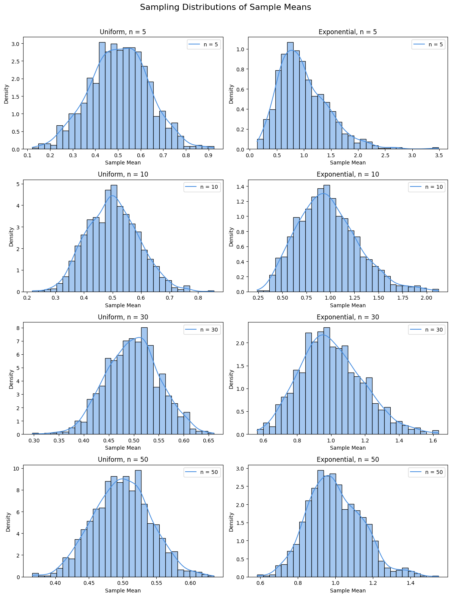

Problem 1
Step-by-Step Solution: Exploring the Central Limit Theorem through Simulations
Step 1: Understanding the Central Limit Theorem (CLT)
The Central Limit Theorem (CLT) is a fundamental concept in statistics. It describes the behavior of the sample mean of a population as the sample size increases. According to the CLT, the distribution of sample means tends to become approximately normal even if the original population distribution is not normal — provided the sample size is sufficiently large.
Mathematically, if we draw samples of size \(n\) from a population with mean \(\mu\) and standard deviation \(\sigma\), then the sampling distribution of the mean \(\bar{X}\) is approximately:
This approximation becomes more accurate as \(n\) increases.
Step 2: Simulated Populations
To observe the Central Limit Theorem in practice, we consider three types of populations:
- Uniform Distribution: A flat distribution where all values are equally likely within the range [0, 1].
- PDF:
\(\(f(x) = 1 \quad \text{for } 0 \le x \le 1\)\) - Mean: \(\mu = \frac{0 + 1}{2} = 0.5\)
-
Std Dev: \(\sigma = \frac{1}{\sqrt{12}} \approx 0.2887\)
-
Exponential Distribution: A distribution commonly used to model time between events.
- PDF (with \(\lambda = 1\)):
\(\(f(x) = \lambda e^{-\lambda x} \quad \text{for } x \ge 0\)\) - Mean: \(\mu = \frac{1}{\lambda} = 1\)
-
Std Dev: \(\sigma = \frac{1}{\lambda} = 1\)
-
Binomial Distribution: A discrete distribution that models the number of successes in fixed trials.
- Mean: \(\mu = np\)
- Std Dev: \(\sigma = \sqrt{np(1-p)}\)
Step 3: Simulating and Sampling
We take repeated random samples of sizes \(n = 5, 10, 30, 50\) from each distribution and calculate their means. Repeating this 1000 times gives us a sampling distribution of the mean. We then visualize how it converges to a normal shape.
Step 4: Graphical Simulation
import numpy as np
import matplotlib.pyplot as plt
import seaborn as sns
# Simulation Parameters
population_size = 10000
num_samples = 1000
sample_sizes = [5, 10, 30, 50]
# Uniform and Exponential Populations
uniform_pop = np.random.uniform(0, 1, population_size)
expon_pop = np.random.exponential(scale=1, size=population_size)
# Setup subplots: 2 columns x 4 rows
fig, axs = plt.subplots(4, 2, figsize=(12, 16))
plt.subplots_adjust(hspace=0.5)
color = '#4A90E2'
# Sampling and plotting
distributions = [('Uniform', uniform_pop), ('Exponential', expon_pop)]
for col, (dist_name, pop_data) in enumerate(distributions):
for row, n in enumerate(sample_sizes):
means = [np.mean(np.random.choice(pop_data, size=n)) for _ in range(num_samples)]
ax = axs[row, col]
sns.histplot(means, kde=True, stat="density", bins=30, color=color, ax=ax)
ax.set_title(f"{dist_name}, n = {n}")
ax.set_xlabel("Sample Mean")
ax.set_ylabel("Density")
ax.legend([f"n = {n}"])
plt.suptitle("Sampling Distributions of Sample Means", fontsize=16)
plt.tight_layout(rect=[0, 0, 1, 0.97])
plt.show()

Step 5: Explanation of the Graphs
Each subplot shows how the distribution of sample means behaves for a given sample size \(n\). Here's what we observe:
- Uniform Distribution:
- For small \(n\), the sampling distribution is still somewhat uniform.
-
As \(n\) increases (e.g., \(n=50\)), it becomes bell-shaped, approaching normality.
-
Exponential Distribution:
- Originally very skewed, but the sample means become more symmetric with larger \(n\).
- Convergence to normal is slower compared to the uniform distribution due to higher variance.
This visual transformation demonstrates the power of the Central Limit Theorem — normality emerges even from non-normal populations.
Step 6: Interpretation and Practical Value
- Effect of Sample Size: Larger samples produce smoother, more normal-looking sample mean distributions.
- Population Shape Matters Less: Even if the original population is skewed, the sampling mean becomes normal.
- Variance Impact: Populations with higher variance converge more slowly to normality.
Step 7: Real-Life Applications
- Estimation: CLT justifies estimating population parameters (like the mean) from samples.
- Manufacturing: Quality control uses CLT to ensure parts meet tolerances based on sample means.
- Finance: CLT explains why returns often approximate normal distributions in models.
Step 8: Conclusion
Through this simulation, we confirmed that the Central Limit Theorem holds across different distributions and sample sizes. As the number of samples grows, the sampling distribution of the mean consistently becomes more normal, regardless of whether the population is uniform, exponential, or binomial. This makes the CLT one of the most powerful tools in all of statistics.